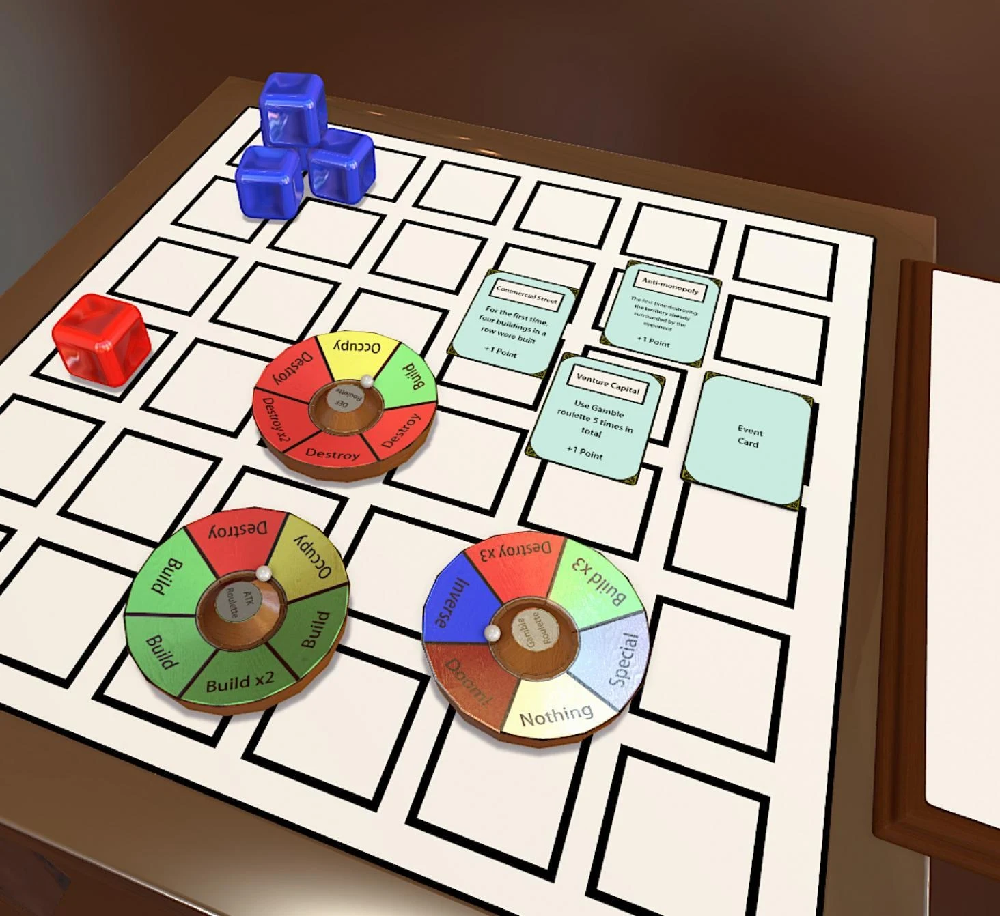
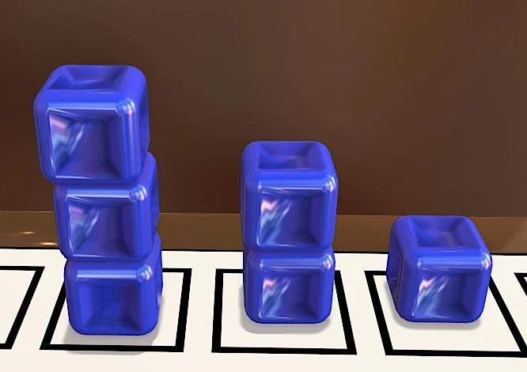
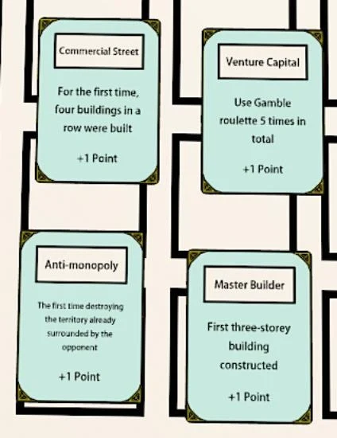
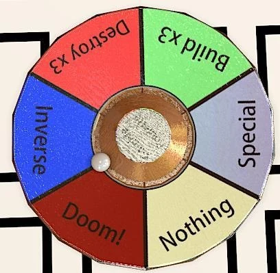

包围与占领
围成方形而非十字形的空地可提供额外 1 分。Attack / Defense 轮盘上的 Occupy 可取得被己方建筑邻接包围的对方建筑。
在 6×6 城市中建造、拆除与占领，通过不同轮盘承担不同的风险。

双人策略桌游，使用 6×6 棋盘，通过建造、拆除、占领和事件卡争夺地产。蓝方先手，洗混事件卡并翻开 4 张，供玩家围绕目标安排后续行动。
在一轮结束后检查胜利：达到 15 分即可获胜；若双方都达到 15 分，比较分数，平分则继续额外回合，直到出现更高分。


建筑最多三层。建二层需相邻一层建筑，建三层需相邻二层建筑，任意颜色的建筑都能满足邻接条件。三层建筑价值 4 分。
围成方形而非十字形的空地可提供额外 1 分。Attack / Defense 轮盘上的 Occupy 可取得被己方建筑邻接包围的对方建筑。
建筑分会随拆除而受损；完成事件卡任务得到的分数不会像建筑分一样因建筑被拆而失去。

| 轮盘 / 效果 | 规则与选择 |
|---|---|
| Attack | 偏向建造、扩展影响范围。 |
| Defense | 偏向拆除对方建筑，每次只拆一层；若对方没有建筑，抽到拆除时需拆自己的建筑。 |
| Gamble · Inverse | 用两颗骰子确定位置，反转该处建筑归属；无建筑则不生效。 |
| Gamble · Doom! | 用骰子确定位置，拆除该处全部建筑；无建筑则不生效。 |
| Gamble · Special | 所有现存建筑增加一层，不区分归属，也不检查邻接条件。 |
轮盘选择把当前布局、可损失的建筑与事件目标联系起来。